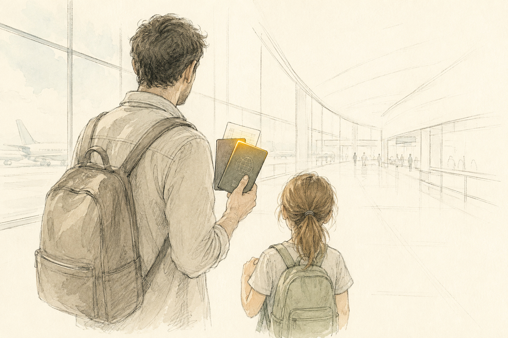
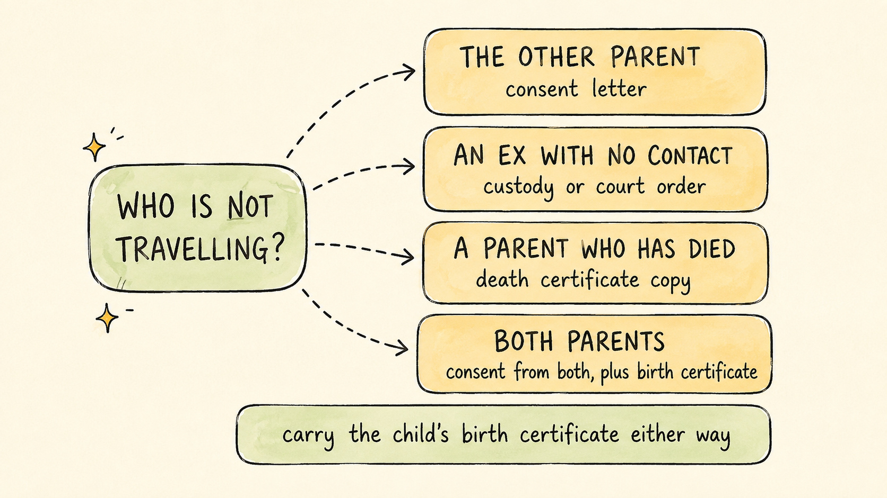

Travelling With a Child Without Both Parents: The Paperwork for Each Situation
Travel Document Vault

Key Takeaways
- Check-in staff and border officers check different things. Satisfying one does not bind the other, at arrival or on the way out.
- One parent travelling: carry a consent letter and the child's birth certificate.
- Sole custody: the custody or court order is often more useful at the border than a letter.
- Other parent has died: carry a certified copy of the death certificate instead of a consent letter.
- Different surname: the child's full birth certificate usually settles it, plus a marriage or divorce certificate if your own name has changed.
Airline check-in staff and border officers look twice at a child travelling without both parents, and that second look is routine child-protection screening, not suspicion of anyone in particular. It ends the moment the paperwork matches the situation. Which paperwork that is depends on why the other parent is absent: still at home, no longer sharing custody, or no longer alive. Each of those calls for a different document, and the consent letter most guides talk about only covers the first.
The Airline Desk and the Border Check Different Things
Two different people look at the same paperwork for two different reasons, and knowing that saves confusion at the desk. Check-in staff are not deciding whether your child may enter the destination country. They are checking whether the airline is confident you will be let in, because under long-standing arrangements between carriers and governments, an airline can be held responsible for flying home a passenger the destination later refuses. That is why check-in agents sometimes ask more than the border officer eventually does: they are protecting the airline against its own liability.
The border officer you meet after landing makes an entirely separate decision, unconnected to whatever the airline decided earlier. Some countries repeat the check on the way out too, not only coming in, so a smooth arrival says nothing about how the exit check will go a fortnight later. Satisfying one does not bind the other, and that is the single most useful thing to understand before travelling with a child and only one adult in your row.
Flying With One Parent: Start With the Consent Letter
If you are the only parent travelling and the other parent is alive, well, and simply not on this trip, the document most borders expect is a consent letter, and we cover exactly what one must say, when it needs notarising, and the mistakes that get letters rejected in our full guide to the child travel consent letter.
Two things sit outside that letter and are worth carrying alongside it. Pack your child's birth certificate, since a consent letter names a child and a parent, and the birth certificate is what ties the two of you together in the first place. Some countries also expect the letter to reflect everyone who holds parental responsibility, not only the parent named on the passport, which can include a step-parent or a guardian depending on your family's legal situation. Whether that applies to you is worth checking with your destination's immigration authority rather than assuming, since it varies by country and by circumstance.
Sole Custody: When the Court Order Is the Document
Sole custody changes which document matters rather than removing the need for one. When a court has given you sole custody or sole parental responsibility, the more useful paper at the border is often the custody order itself, or a certified copy of it, rather than a letter from the other parent. Many border authorities accept the order in place of a consent letter, and some ask to see it alongside one regardless. If the order leaves the other parent with contact or access rights, a letter from them is still worth carrying.
Travel with the order, or a certified copy of it. It does no good in a filing cabinet at home. Officers who ask are usually looking for a plain answer to one question: does this adult have the legal standing to make this decision for this child. A certified copy answers that in seconds, and if your custody arrangement changed recently, it is worth checking whether your destination expects a more current copy than the one you have been carrying for years.
When the Other Parent Has Died
There is no consent letter to write when the other parent has died, and no border officer expects one. What you carry instead is a copy of the death certificate, which answers the question a consent letter would otherwise answer: why only one parent is here.
Keep the certified copy with your passports rather than in a separate file at home, since it is the one document here you cannot quickly replace if it goes missing partway through the trip. A printed copy plus an encrypted digital backup covers both a lost bag and a phone that will not turn on. If your child's surname differs from yours, the birth certificate does the same job here that it does everywhere else in this article, showing the child is yours to travel with, whatever name appears on the passport.
The practical answer stays short: one document, kept close, and a process that generally moves on quickly once it has been shown.

A Different Surname to Your Child
A surname that does not match your child's is common and rarely causes a problem once you have the right paper to hand, though it is worth carrying that paper rather than hoping nobody asks. Marriage, divorce, remarriage, and simply choosing not to share a surname at birth are all ordinary reasons for the mismatch, and an officer who asks about it is usually working through the same short mental checklist rather than suspecting anything in particular.
Your child's full birth certificate, the one that names you as the parent, closes the question fastest. If your own name has changed since that certificate was issued, a marriage or divorce certificate bridges the gap between the name on your passport and the name on your child's. Pack both even for a routine trip to a place you have visited before, because the same mismatch that gets waved through on one visit can prompt a longer conversation on the next, depending on which officer happens to be on duty that day.
Grandparents, Relatives and Guardians: Neither Parent Travelling
When a grandparent, aunt, uncle, or family friend travels with a child and neither parent is on the trip, the paperwork gets heavier, because most countries expect evidence that both parents, or both legal guardians, have agreed to the trip, not just one. The format is the same consent letter we cover in full elsewhere, but here it typically needs both parents' signatures rather than one, along with contact details for each.
The accompanying adult should also carry the child's birth certificate and be ready to explain the relationship in plain terms if asked, since "family friend" tends to invite more questions than "grandparent" even when both are carrying identical paperwork. Airlines can refuse to board a child if the adult cannot produce this at check-in, for the same carrier-liability reason covered earlier: the airline is protecting itself from a refused entry at the other end, before the flight has even left the ground.
If Questions Come Anyway
Even with every document in order, a border officer or check-in agent may still ask a few questions, and it helps to know what that conversation actually is: a short verification, not an accusation. The questions tend to be simple: where the family lives, how the trip came about, and how the child is related to the adult beside them. A child who can answer briefly in their own words tends to move things along faster than a nervous adult answering for them.
If a phone number appears on a consent letter or custody order, be ready for it to be called. That call is routine. Carrying everything covered here does not promise zero questions, but it means that when questions do come, you have an answer ready for each one, which is generally what settles these conversations at the desk.
One Bundle Per Situation
Every situation above needs its own small bundle of paper, and it is easy to lose track of which document belongs with which trip once a family's circumstances have changed more than once. Use this as a starting point rather than a substitute for checking your destination's own requirements, which is worth doing every time rather than assuming last year's trip still applies.
| Situation | Documents to carry |
|---|---|
| One parent travelling, other parent not present | Consent letter, child's birth certificate |
| Sole or primary custody | Certified copy of the custody order, child's birth certificate |
| Other parent has died | Certified copy of the death certificate, child's birth certificate |
| Different surname to your child | Child's full birth certificate, marriage or divorce certificate if applicable |
| Grandparent, relative or guardian travelling, neither parent present | Consent letter signed by both parents or guardians, child's birth certificate |
Whichever bundle applies to your family, the practical problem is the same: keeping it together, keeping it current, and being able to find it at the check-in desk rather than at the bottom of a bag. Our broader travel document checklist covers what to pack beyond this specific situation, and our guide to organising family travel documents walks through keeping every family member's paperwork sorted between trips, not only the one you are packing for now.
Travel Document Vault stores encrypted copies of every family member's documents on-device, including birth certificates, custody orders and consent letters kept alongside each passport, protected behind Face ID, Touch ID or a PIN. It also reminds you up to eight months before a passport in the family is due to expire. Download on the App Store and Google Play.
Before you rely on this: it's a blog, not an official source. Rules and details change, and your situation may be different. We check what we publish, and we can still be wrong or out of date. If something here matters to your plans, confirm it with the authority that handles it before you act.
Frequently Asked Questions
Do I need a consent letter if I have sole custody of my child?
Often the more useful document is the custody order or court order itself. Many border authorities accept it in place of a consent letter from the other parent, and some ask to see it alongside one. Carry the order or a certified copy, and verify what your destination expects before you travel.
What do I need to travel with my child if the other parent has died?
A consent letter is not possible, so carry a copy of the death certificate instead. Border officers who would normally ask about the absent parent generally accept it as the answer. Keep a printed copy with your passports and an encrypted digital backup, and check your destination's guidance before departure.
Can my child travel abroad with grandparents or another relative?
Yes, but most countries expect written consent from both parents or legal guardians, not just one. The accompanying adult should also carry contact details for both parents and a copy of the child's birth certificate. Airlines can refuse to board a child if the adult cannot show this when asked.
Will a different surname from my child cause problems at the airport?
It can prompt extra questions, particularly with younger children. A copy of the child's full birth certificate, which names you as the parent, usually settles it quickly. A marriage or divorce certificate helps if your name has changed since the birth certificate was issued. Pack them even for routine trips.
Who checks the paperwork, the airline or border control?
Both can, at different moments. Check-in staff confirm you meet the destination's entry rules before boarding, because airlines can be fined for carrying passengers who are then refused entry. Border officers make their own decision on arrival, and sometimes on exit. Satisfying one does not bind the other.